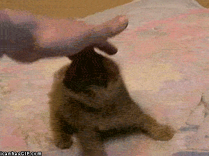
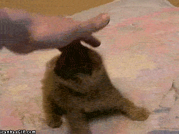

A demonstration of what can be accomplished through CSS-based design. A list of far better designers than myself are listed on the right.
etc etc etc

A demonstration of what can be accomplished through CSS-based design. A list of far better designers than myself are listed on the right.
etc etc etc

Littering a dark and dreary road lay the past relics of browser-specific tags, incompatible DOMs, broken CSS support, and abandoned browsers.
We must clear the mind of the past. Web enlightenment has been achieved thanks to the tireless efforts of folk like the W3C, WaSP, and the major browser creators.
The CSS Zen Garden invites you to relax and meditate on the important lessons of the masters. Begin to see with clarity. Learn to use the time-honored techniques in new and invigorating fashion. Become one with the web.